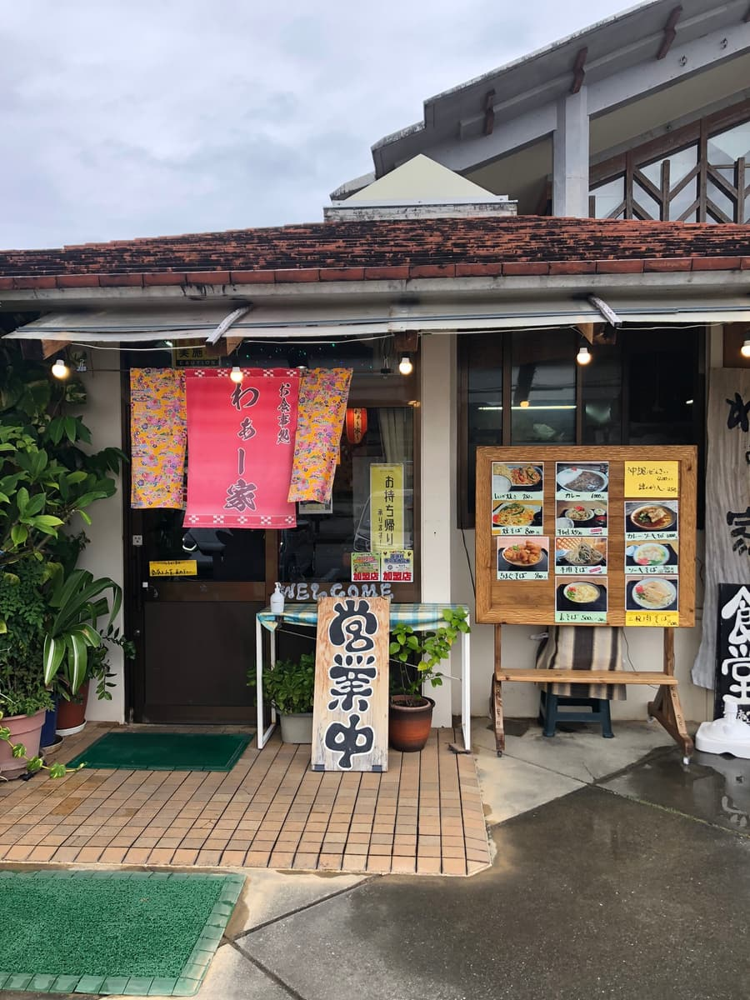
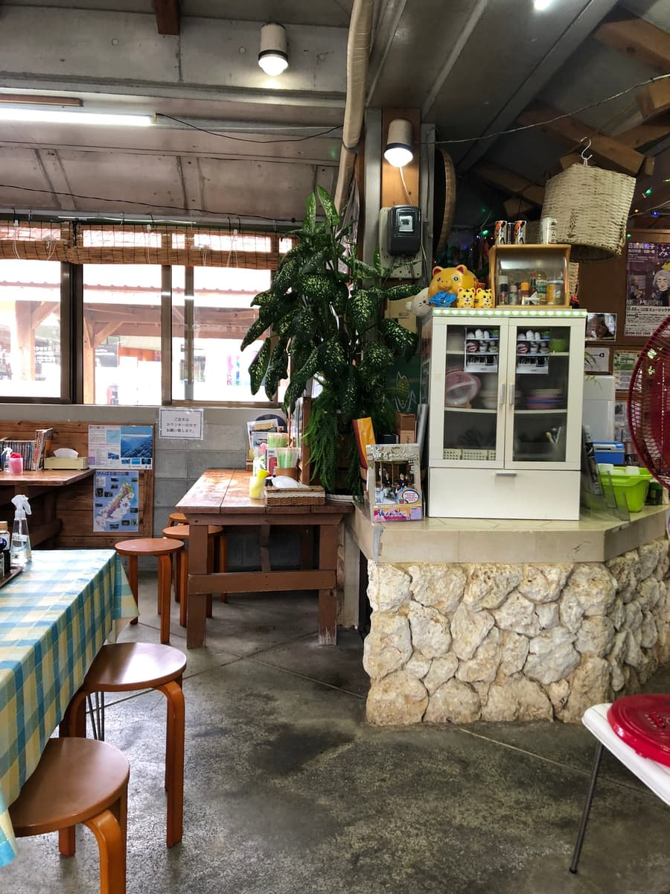
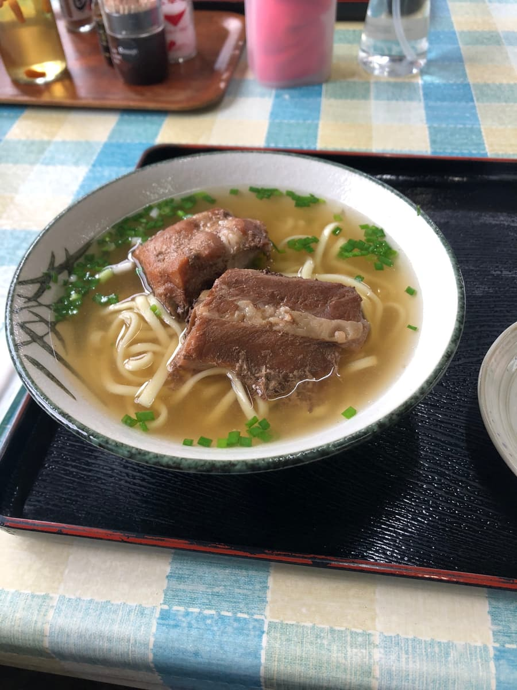

这篇文章是用AI（Claude 3.7 Sonnet）写的，部分由我补写（笑）🍜✨
2024年10月吃的😄
这次去了位于国头村奥间、道之驿「结结国头」园区内的「哇家」。国头村位于冲绳本岛的最北端，是自然资源丰富的地区，被山原（Yanbaru）的森林和美丽的海洋环绕，作为观光景点也很受欢迎呢🌳🌊

道之驿「结结国头」有丰富的在地特产和观光资讯，也是很适合兜风途中休息的地方。位在园区内的「哇家」不只受在地人欢迎，也是很受观光客喜爱的店😄

走进店里，有种莫名令人怀念的氛围。充满南国风情的格纹桌巾让人感到温暖。看菜单，除了冲绳面之外，还列着几道冲绳乡土料理。这次决定点经典的「排骨面」🍜

等了一会儿，「排骨面」送上来了。清澈的琥珀色汤头、中粗直面，再加上排骨肉，摆盘很用心。首先照惯例从汤头开始品尝。
喝了一口汤，猪骨高汤的味道稍微明显，咸味感觉稍微偏重。
接着吃面。是中细的直面，口感稍微偏软。和汤头融合得不错，但我个人觉得可以再多一点嚼劲。
排骨肉是清爽系的调味，很正常的好吃，不过有些部分残留相当多的筋感，有的地方不太好咬。之前听说这家店以前用的是野猪与家猪混种的肉，但现在好像很难取得，改成普通的猪肉了。本来想第一次体验混种猪的排骨面，有点可惜😢
店里还有好几组看起来像观光客的客人，可以看到大家在享受冲绳的饮食文化。来到国头村的时候，除了山原的大自然，这里也是可以享用冲绳面的好地方呢🚗
评分（9分/15分）：汤头是猪骨基底、咸味明显，很正常的好吃。面也偏软好入口，但排骨肉有点筋感，感觉还差一点。如果来国头村观光时顺道一访，作为在地的味道，我觉得值得吃一次看看😊
面：★★★☆☆（3）
汤头：★★★☆☆（3）
配料：★★★☆☆（3）